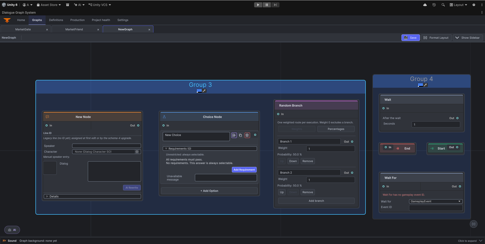
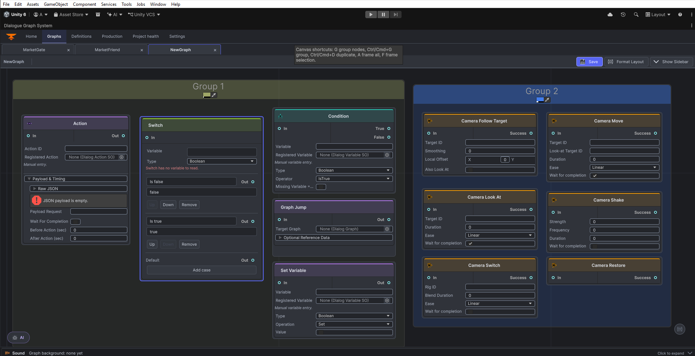

Node Reference
Learn each node’s fields and connection ports, then try it in the Unity editor. Browser previews are interactive field examples; edits stay in the browser and never change a Unity graph.


A node’s output identifies the route; the next node’s input receives it. Most nodes use In/Out. Choice has one output per option, Condition has True/False, seven Camera nodes label their output Success, Switch has one output per case plus Default, and Random Branch has one output per branch. Start has only Out; End has only In.
Index
- Start · End
- Dialog · Choice
- Action · Condition · Variable Mutation
- Graph Jump · Outcome
- 7 Camera nodes
- Random Branch · Switch · Wait · Wait For
Start
Purpose: Marks graph entry.
Fields: No editable content fields; Start identity and canvas position belong to the graph asset.
Ports: In: no input; Out: only output.
In this browser example: The preview is the graph entry boundary and has no editable fields. These values are local to the example and are not saved to Unity.
Try this in Unity
- Open Tools > Beka Forge > Dialogue Graph System > Open Editor and open a graph.
- Select the editor-created Start boundary and connect its Out port to the first node’s In port. Start has no editable content fields.
- Select Save to persist the graph and its links.
Expected result: Marks graph entry.
Common mistake: Trying to add a second Start instead of using the editor boundary.
End
Purpose: Ends a route.
Fields: No editable content fields; End identity and canvas position belong to the graph asset.
Ports: In: only input; Out: no output.
In this browser example: The preview is the graph terminal boundary and has no editable fields. These values are local to the example and are not saved to Unity.
Try this in Unity
- Open Tools > Beka Forge > Dialogue Graph System > Open Editor and open a graph.
- Select the editor-created End boundary and connect the route’s output to its In port. End has no editable content fields or output.
- Select Save to persist the graph and its links.
Expected result: Ends a route.
Common mistake: Expecting it to continue to another node.
Dialog Node
Purpose: Presents a line and continues.
Fields: Node Title labels the card; Line ID is the stable spoken-line key; Speaker is manual text; Character optionally references a definition; Dialog is spoken text; Details contains Portrait, Display Time, Audio Clip, Wait for Audio, and Sync Text with Audio.
Ports: In: In port; Out: single Out port.
In this browser example: Edit Dialog text and observe the example line change on the node. These values are local to the example and are not saved to Unity.
Try this in Unity
- Open Tools > Beka Forge > Dialogue Graph System > Open Editor and open a graph.
- Right-click the graph canvas, choose Create > Dialog Node, set Node Title, Line ID, speaker/character, and Dialog on the card, then connect Out to the next node’s In.
- Select Save to persist the graph and its links.
Expected result: Presents a line and continues.
Common mistake: Confusing Node Title with the spoken Dialog, or Speaker with Character.
Choice Node
Purpose: Lets the selected answer choose its own route.
Fields: Each option row edits answer text; the editor creates and maintains its stable choice ID, which maps the row to its output. The active Choice card has no prompt field, so put the question in the preceding Dialog node. Requirements restrict availability and all listed requirements must pass; Unavailable message explains a blocked option. Add Option adds a response.
Ports: In: In port; Out: one unlabeled output per option row; each output maps to that option.
In this browser example: Edit an option label or add an option, then observe the new answer row and output. These values are local to the example and are not saved to Unity.
Try this in Unity
- Open Tools > Beka Forge > Dialogue Graph System > Open Editor and open a graph.
- Right-click the graph canvas, choose Create > Choice Node, add answer rows and edit each answer’s text; the editor manages stable choice IDs. Put the question in the preceding Dialog node, then connect each answer output to its response.
- Select Save to persist the graph and its links.
Expected result: Lets the selected answer choose its own route.
Common mistake: Leaving an option output disconnected.
Action Node
Purpose: Requests a game-specific action.
Fields: Action ID selects the registered handler; Registered Action is its definition. Payload & Timing contains Payload JSON, Payload Request, Wait For Completion, Before Action, and After Action.
Ports: In: In port. Out: Out port.
In this browser example: Change Action ID or Payload and observe those values update on the node. These values are local to the example and are not saved to Unity.
Try this in Unity
- Open Tools > Beka Forge > Dialogue Graph System > Open Editor and open a graph.
- Right-click the graph canvas, choose Create > Action Node, select a registered Action ID and configure payload/completion timing, then connect Out. The handler supplies game-specific behavior.
- Select Save to persist the graph and its links.
Expected result: Requests a game-specific action.
Common mistake: Assuming the definition asset performs gameplay without a runtime handler.
Condition Node
Purpose: Branches on variable state.
Fields: Variable and Registered Variable select state; Type chooses Boolean, Integer, Float, or String; Operator chooses comparison; Value appears when needed; Missing Variable = True defines missing-state handling.
Ports: In: In port; Out: True and False outputs.
In this browser example: Choose a comparison operator; observe whether a Value control is needed for that operator. These values are local to the example and are not saved to Unity.
Try this in Unity
- Open Tools > Beka Forge > Dialogue Graph System > Open Editor and open a graph.
- Right-click the graph canvas, choose Create > Condition Node, select a defined variable and comparison, then connect True and False to separate routes.
- Select Save to persist the graph and its links.
Expected result: Branches on variable state.
Common mistake: Using a value or type that differs from the variable definition.
Variable Node
Purpose: Changes dialogue state.
Fields: Variable selects state; Type chooses Boolean, Integer, Float, or String; Operation selects a compatible change; Value appears when that operation needs an operand.
Ports: In: In port; Out: single Out port.
In this browser example: Change Operation and observe whether its Value operand appears or changes type. These values are local to the example and are not saved to Unity.
Try this in Unity
- Open Tools > Beka Forge > Dialogue Graph System > Open Editor and open a graph.
- Right-click the graph canvas, choose Create > Variable Node, select a defined variable, operation, and value, then connect Out to the next step.
- Select Save to persist the graph and its links.
Expected result: Changes dialogue state.
Common mistake: Selecting an operation unsupported by the chosen type.
Graph Jump Node
Purpose: Transfers traversal into another graph.
Fields: Target Graph selects an asset. Optional Reference Data shows Runtime Dialog ID, Graph GUID, Graph Name, Asset Path, and Entry GUID for the target.
Ports: In: In port; Out: Out continuation port.
In this browser example: Inspect the read-only Target Graph example, then open Optional Reference Data and edit Runtime Dialog ID. The browser preview has no Unity asset picker. These values are local to the example and are not saved to Unity.
Try this in Unity
- Open Tools > Beka Forge > Dialogue Graph System > Open Editor and open a graph.
- Right-click the graph canvas, choose Create > Graph Jump Node, set the target graph and runtime dialog ID, then connect Out to this graph’s continuation.
- Select Save to persist the graph and its links.
Expected result: Transfers traversal into another graph.
Common mistake: Confusing the graph asset with a runtime Dialog ID.
Outcome Node
Purpose: Records a named route outcome, then continues through Out—usually to the graph’s End boundary.
Fields: Outcome ID is the stable result key; Display Name is human-readable; Description says what the result means.
Ports: In: In port. Out: Out port.
In this browser example: Edit Outcome ID and Description; observe the named result fields update. These values are local to the example and are not saved to Unity.
Try this in Unity
- Open Tools > Beka Forge > Dialogue Graph System > Open Editor and open a graph.
- Right-click the graph canvas, choose Create > Outcome Node, set the outcome key and optional display label, then connect Out to End when the route is complete.
- Select Save to persist the graph and its links.
Expected result: Records the named result, then reaches End through the Out connection.
Common mistake: Treating Outcome as the terminal boundary; connect Outcome → End to finish the route.
Camera Switch
Purpose: Switches to a registered camera rig.
Fields: Rig ID selects a rig; Blend Duration and Ease define transition; Wait for completion controls route timing.
Ports: In: In port; Out: Success output.
In this browser example: Change Rig ID or Blend Duration and observe the selected example operation fields. These values are local to the example and are not saved to Unity.
Try this in Unity
- Open Tools > Beka Forge > Dialogue Graph System > Open Editor and open a graph.
- Right-click the graph canvas, choose Create > Camera > Switch, enter the registered rig ID and transition settings, then connect Success to the next node.
- Select Save to persist the graph and its links.
Expected result: Switches to a registered camera rig.
Common mistake: Using an unregistered Rig ID.
Camera Move
Purpose: Moves the active camera toward a target.
Fields: Target ID and optional Look-at Target ID select camera positions/targets; each accepts a registered stable ID or the special token speaker/listener. Duration, Ease, and Wait for completion control transition.
Ports: In: In port; Out: Success output.
In this browser example: Edit Target ID or Duration, then inspect the separate Look-at Target ID field; this preview has no position-vector control. These values are local to the example and are not saved to Unity.
Try this in Unity
- Open Tools > Beka Forge > Dialogue Graph System > Open Editor and open a graph.
- Right-click the graph canvas, choose Create > Camera > Move, enter target and transition values, then connect Success to the next node.
- Select Save to persist the graph and its links.
Expected result: Moves the active camera toward a target.
Common mistake: Mixing the position and look-at target IDs.
Camera Look At
Purpose: Turns toward a registered target.
Fields: Target ID selects what to frame and accepts a registered stable ID or speaker/listener; Duration, Ease, and Wait for completion control the turn.
Ports: In: In port; Out: Success output.
In this browser example: Change Target ID or Ease and observe the framing operation fields. These values are local to the example and are not saved to Unity.
Try this in Unity
- Open Tools > Beka Forge > Dialogue Graph System > Open Editor and open a graph.
- Right-click the graph canvas, choose Create > Camera > Look At, set the target ID and turn settings, then connect Success to the next node.
- Select Save to persist the graph and its links.
Expected result: Turns toward a registered target.
Common mistake: Expecting this node to move camera position.
Camera Follow Point
Purpose: Follows a registered point.
Fields: Target ID identifies a registered point or accepts the special token speaker/listener.
Ports: In: In port; Out: Success output.
In this browser example: Edit Target ID and observe the entered value in that field; this preview does not query a scene point registry. These values are local to the example and are not saved to Unity.
Try this in Unity
- Open Tools > Beka Forge > Dialogue Graph System > Open Editor and open a graph.
- Right-click the graph canvas, choose Create > Camera > Follow Point, enter the registered point ID, then connect Success to the next node.
- Select Save to persist the graph and its links.
Expected result: Follows a registered point.
Common mistake: Entering an object name that does not match its registered ID.
Camera Follow Target
Purpose: Follows a target with an optional offset.
Fields: Target ID selects a registered target or accepts the special token speaker/listener; Smoothing controls response; Local Offset sets relative position; Also Look At enables facing the target.
Ports: In: In port; Out: Success output.
In this browser example: Change Local Offset or Smoothing and observe the follow configuration. These values are local to the example and are not saved to Unity.
Try this in Unity
- Open Tools > Beka Forge > Dialogue Graph System > Open Editor and open a graph.
- Right-click the graph canvas, choose Create > Camera > Follow Target, enter the target ID and offset/smoothing values, then connect Success to the next node.
- Select Save to persist the graph and its links.
Expected result: Follows a target with an optional offset.
Common mistake: Treating Local Offset as world-space coordinates.
Camera Shake
Purpose: Requests a timed camera shake.
Fields: Strength and Frequency set intensity and cadence; Duration sets length; Wait for completion controls route timing.
Ports: In: In port; Out: Success output.
In this browser example: Change Strength or Duration and observe the shake settings update. These values are local to the example and are not saved to Unity.
Try this in Unity
- Open Tools > Beka Forge > Dialogue Graph System > Open Editor and open a graph.
- Right-click the graph canvas, choose Create > Camera > Shake, set strength, frequency, duration, and completion behavior, then connect Success to the next node.
- Select Save to persist the graph and its links.
Expected result: Requests a timed camera shake.
Common mistake: Expecting audio playback from this node.
Camera Restore
Purpose: Requests restoration of the prior/default camera state.
Fields: No additional authored fields.
Ports: In: In port; Out: Success output.
In this browser example: Inspect the example node: Restore has no authored fields in this preview. These values are local to the example and are not saved to Unity.
Try this in Unity
- Open Tools > Beka Forge > Dialogue Graph System > Open Editor and open a graph.
- Right-click the graph canvas, choose Create > Camera > Restore, connect In from the preceding node and Success to the next; this node has no additional fields.
- Select Save to persist the graph and its links.
Expected result: Requests restoration of the prior/default camera state.
Common mistake: Expecting a target field; configure camera state through scene setup and preceding camera operations.
Random Branch Node
Purpose: Selects one weighted route when reached.
Fields: Mode chooses Weights or Percentages. Each branch has a label and weight/probability. Add branch creates routes; Weight 0 excludes a route.
Ports: In: In port; Out: one output per branch.
In this browser example: Switch between Weights and Percentages; observe branch inputs and displayed probabilities change. These values are local to the example and are not saved to Unity.
Try this in Unity
- Open Tools > Beka Forge > Dialogue Graph System > Open Editor and open a graph.
- Right-click the graph canvas, choose Create > Random Branch Node, choose Weights or Percentages, add branches, and connect each branch output to its route.
- Select Save to persist the graph and its links.
Expected result: Selects one weighted route when reached.
Common mistake: Reading weights as percentages; weights are relative values.
Switch Node
Purpose: Routes to the matching value.
Fields: Variable selects state; Type chooses Boolean, Integer, Float, or String; each case has a label and comparison value. Add case adds a route; Default handles unmatched values.
Ports: In: In port; Out: one output per case plus Default.
In this browser example: Change a case value or add a case; observe the case outputs and Default route. These values are local to the example and are not saved to Unity.
Try this in Unity
- Open Tools > Beka Forge > Dialogue Graph System > Open Editor and open a graph.
- Right-click the graph canvas, choose Create > Switch Node, select the variable type, add cases/values, and connect case outputs plus Default to routes.
- Select Save to persist the graph and its links.
Expected result: Routes to the matching value.
Common mistake: Forgetting Default or mismatching value types.
Wait Node
Purpose: Delays this graph route.
Fields: Seconds sets the timed pause before continuing.
Ports: In: In port; Out: Out port after the wait.
In this browser example: Change Seconds and observe the delay value on the node. These values are local to the example and are not saved to Unity.
Try this in Unity
- Open Tools > Beka Forge > Dialogue Graph System > Open Editor and open a graph.
- Right-click the graph canvas, choose Create > Wait Node, set delay seconds, then connect Out to the node that should follow the pause.
- Select Save to persist the graph and its links.
Expected result: Delays this graph route.
Common mistake: Assuming it pauses Unity time globally.
Wait For Node
Purpose: Waits for an event or state condition.
Fields: Wait for chooses Gameplay Event or Variable Condition. Event mode uses Event ID; variable mode uses Variable, Type, Operator, optional Value, and Missing Variable = True.
Ports: In: In port; Out: Out port when satisfied.
In this browser example: Switch Wait for between Gameplay Event and Variable Condition; observe the active field group change. These values are local to the example and are not saved to Unity.
Try this in Unity
- Open Tools > Beka Forge > Dialogue Graph System > Open Editor and open a graph.
- Right-click the graph canvas, choose Create > Wait For Node, choose Gameplay Event or Variable Condition, complete that mode’s fields, then connect Out to the continuation.
- Select Save to persist the graph and its links.
Expected result: Waits for an event or state condition.
Common mistake: Waiting for an event never raised, or editing fields for the inactive mode.
For complete walkthroughs, see Creating a Dialog, Integrating Actions, and AI Authoring. See also the Inspector Reference.